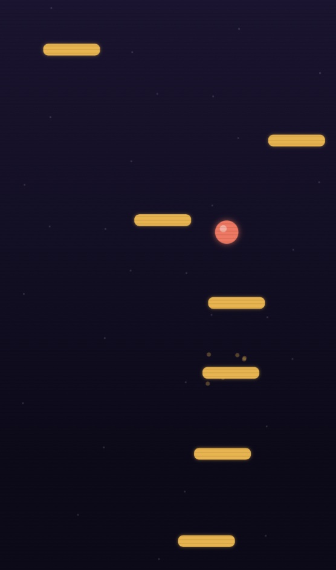
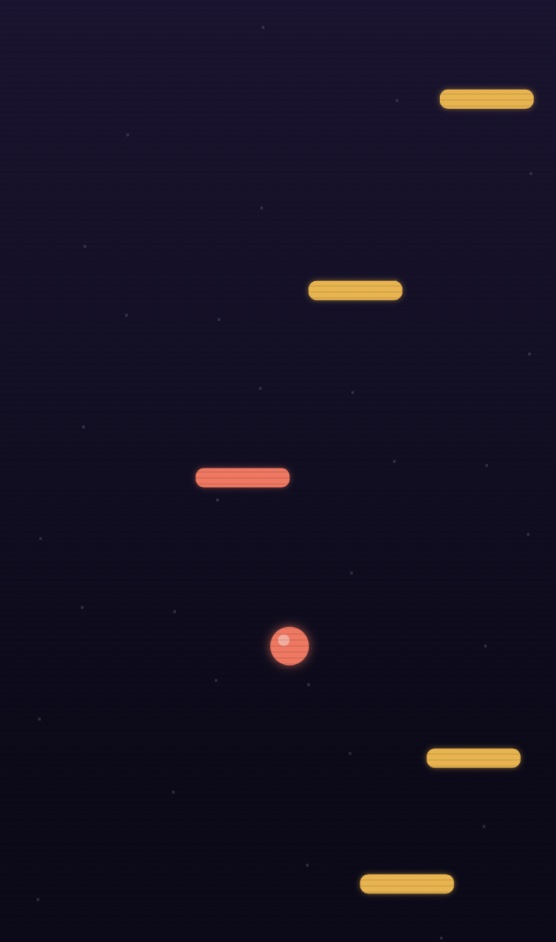
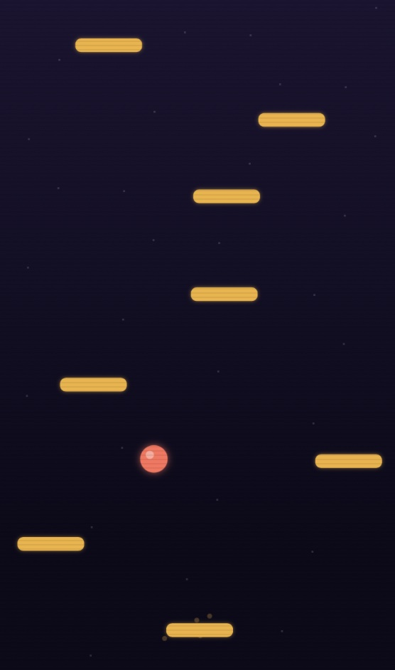

Free · No download · Play in browser
Play Neon Climb online for free — a vertical climbing game where you steer between platforms, avoid falling, and climb higher to reach new heights.
How to play Neon Climb
Neon Climb is a vertical climbing game built around precise steering, not manual jumping: move your mouse (or drag your finger on mobile) left and right, and your character bounces automatically every time it lands on a platform. Gold platforms hold still, cyan platforms slide back and forth, and coral platforms crumble the moment you land on them, so plan your next landing before you touch down. Drift off either edge of the screen and you'll wrap around to the other side. Avoid falling below the screen — that's the only way to lose — and keep climbing higher to reach new heights and beat your high score. It's an endless climb: there's no fixed top, just how far your reflexes and timing can take you.
Neon Climb screenshots



Controls
| Action | Desktop | Mobile |
|---|---|---|
| Steer | Move mouse left/right | Drag finger left/right |
| Jump | Automatic on landing | Automatic on landing |
| Start / Retry | Click the on-screen button | Tap the on-screen button |
Tips & strategies
- Plan two platforms ahead, not one. Since you bounce automatically, the real skill is precision steering toward a good next landing — not just the platform right below you.
- Treat coral platforms as one-time only. They crumble right after you land, so don't count on using the same one twice on your way back down if you drift.
- Use the wrap-around on purpose. Drifting off one edge to reappear on the other is often the fastest way to reach a platform that's otherwise out of reach.
- Cyan platforms reward patience. They slide back and forth — sometimes it's worth waiting a beat before committing to line up your landing.
- Balance speed with control. Chasing height too fast makes it easy to overshoot a platform — steady, accurate movement beats rushing every time.
Game features at a glance
- Mouse or touch steering, fully automatic jumping
- Three platform types: static, moving, and breakable
- Screen-wrap movement — drift off one edge, reappear on the other
- Increasing difficulty and harder platform mixes the higher you climb
- Endless climbing — no fixed top, just how high you can reach
- High score saved locally in your browser between visits
- Runs entirely in-browser, no plugins or installs
About this game
Neon Climb is an original PlayItNow build, made in-house for instant browser play — no plugins, no downloads, nothing to install. If you enjoy climbing games, vertical platformers, or classic endless jumpers like Doodle Jump, Neon Climb runs on that same steer-and-bounce formula: easy to learn, hard to master once the platform mix gets trickier the higher you climb. It's a simple, skill-based arcade game built to match the neon-arcade look used across the rest of the site.
Neon Climb — FAQ
How do I jump higher?
You don't control jump height directly — your character bounces automatically off every platform it lands on. The skill is in steering toward good landings, not timing a jump button.
What happens on coral platforms?
They crumble right after you bounce off them, so treat them as a one-time landing spot rather than something to rely on twice.
Does my high score save?
Yes — your best height is saved locally in your browser, so it'll still be there next time you visit on the same device and browser.
Does it work on mobile?
Yes — drag your finger left and right to steer, the same as moving your mouse on desktop.
Is Neon Climb like Doodle Jump or other climbing games?
It's built on the same steer-and-bounce formula popularized by Doodle Jump and other vertical climbing games — move left and right, bounce automatically off platforms, and see how high you can climb. If you enjoy vertical platformers or endless climbing games in general, the core loop will feel familiar.
Looking for something else? Browse all games on PlayItNow.